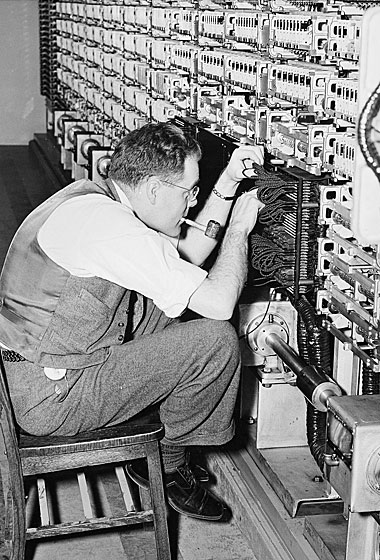

Máquina de Turing
Desenvolvida por Alan Turing em 1936, a Máquina de Turing representa o alicerce essencial da tecnologia contemporânea. Concebida durante um período crucial na história, esta invenção transcendental não se limita a uma representação abstrata de um dispositivo computacional. Equipada com uma fita infinita, uma cabeça de leitura perspicaz e um conjunto de estados dinâmico, a Máquina de Turing simboliza a essência do processamento de informações. Para além de moldar a trajetória da ciência da computação, ela delineia os limites e revela as inúmeras possibilidades do mundo digital.